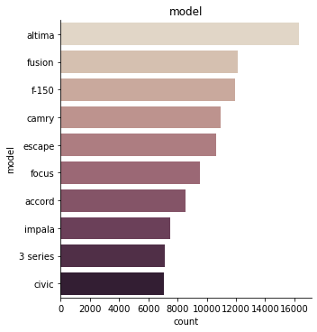
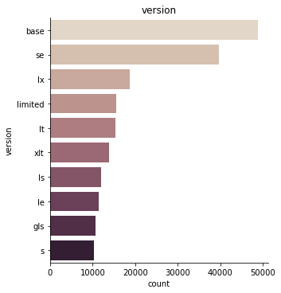
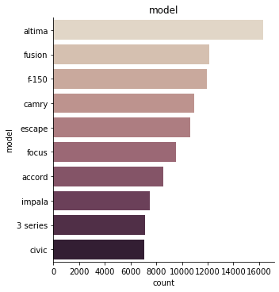
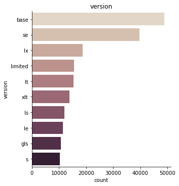

Data analysis
Inhalt
Data analysis¶
Here you can find the exploratory data analysis (EDA) to understand more about the “used car prices”-dataset.¶
Load packages¶
import pandas as pd
import numpy as np
%matplotlib inline
import seaborn as sns
import matplotlib.pyplot as plt
---------------------------------------------------------------------------
ModuleNotFoundError Traceback (most recent call last)
Input In [1], in <cell line: 4>()
1 import pandas as pd
2 import numpy as np
----> 4 get_ipython().run_line_magic('matplotlib', 'inline')
5 import seaborn as sns
6 import matplotlib.pyplot as plt
File /opt/anaconda3/envs/jpbook/lib/python3.9/site-packages/IPython/core/interactiveshell.py:2304, in InteractiveShell.run_line_magic(self, magic_name, line, _stack_depth)
2302 kwargs['local_ns'] = self.get_local_scope(stack_depth)
2303 with self.builtin_trap:
-> 2304 result = fn(*args, **kwargs)
2305 return result
File /opt/anaconda3/envs/jpbook/lib/python3.9/site-packages/IPython/core/magics/pylab.py:99, in PylabMagics.matplotlib(self, line)
97 print("Available matplotlib backends: %s" % backends_list)
98 else:
---> 99 gui, backend = self.shell.enable_matplotlib(args.gui.lower() if isinstance(args.gui, str) else args.gui)
100 self._show_matplotlib_backend(args.gui, backend)
File /opt/anaconda3/envs/jpbook/lib/python3.9/site-packages/IPython/core/interactiveshell.py:3472, in InteractiveShell.enable_matplotlib(self, gui)
3451 def enable_matplotlib(self, gui=None):
3452 """Enable interactive matplotlib and inline figure support.
3453
3454 This takes the following steps:
(...)
3470 display figures inline.
3471 """
-> 3472 from matplotlib_inline.backend_inline import configure_inline_support
3474 from IPython.core import pylabtools as pt
3475 gui, backend = pt.find_gui_and_backend(gui, self.pylab_gui_select)
File /opt/anaconda3/envs/jpbook/lib/python3.9/site-packages/matplotlib_inline/backend_inline.py:6, in <module>
1 """A matplotlib backend for publishing figures via display_data"""
3 # Copyright (c) IPython Development Team.
4 # Distributed under the terms of the BSD 3-Clause License.
----> 6 import matplotlib
7 from matplotlib.backends.backend_agg import ( # noqa
8 new_figure_manager,
9 FigureCanvasAgg,
10 new_figure_manager_given_figure,
11 )
12 from matplotlib import colors
ModuleNotFoundError: No module named 'matplotlib'
Import dataset¶
# import dataset and save it as df
df = pd.read_csv("car_prices.csv", on_bad_lines="skip")
# on_bad_lines="skip" otherwise it caused a problem
# show first two rows to check if the dataset is imported correctly
df.head(2)
| year | make | model | trim | body | transmission | vin | state | condition | odometer | color | interior | seller | mmr | sellingprice | saledate | |
|---|---|---|---|---|---|---|---|---|---|---|---|---|---|---|---|---|
| 0 | 2015 | Kia | Sorento | LX | SUV | automatic | 5xyktca69fg566472 | ca | 5.0 | 16639.0 | white | black | kia motors america, inc | 20500 | 21500 | Tue Dec 16 2014 12:30:00 GMT-0800 (PST) |
| 1 | 2015 | Kia | Sorento | LX | SUV | automatic | 5xyktca69fg561319 | ca | 5.0 | 9393.0 | white | beige | kia motors america, inc | 20800 | 21500 | Tue Dec 16 2014 12:30:00 GMT-0800 (PST) |
year = year the car was put into the dataset
make = brand of the car
model = cars model
trim = cars version
body = cars type
transmission = cars drivetrain
vin = code
state = state where the car was sold
condition = condition of the car 0.0 - 5.0
odometer = miles of the car
color = cars color
interior = interior color
seller = seller
mmr = ratingprice
sellingprice = sellingprice
saledate = date of sale
# print how many observations and columns the dataset exists of
print(f"We have {len(df.index):,} observations and {len(df.columns)} columns in our dataset.")
We have 558,811 observations and 16 columns in our dataset.
# overview
df.info()
<class 'pandas.core.frame.DataFrame'>
RangeIndex: 558811 entries, 0 to 558810
Data columns (total 16 columns):
# Column Non-Null Count Dtype
--- ------ -------------- -----
0 year 558811 non-null int64
1 make 548510 non-null object
2 model 548412 non-null object
3 trim 548160 non-null object
4 body 545616 non-null object
5 transmission 493458 non-null object
6 vin 558811 non-null object
7 state 558811 non-null object
8 condition 547017 non-null float64
9 odometer 558717 non-null float64
10 color 558062 non-null object
11 interior 558062 non-null object
12 seller 558811 non-null object
13 mmr 558811 non-null int64
14 sellingprice 558811 non-null int64
15 saledate 558811 non-null object
dtypes: float64(2), int64(3), object(11)
memory usage: 68.2+ MB
# print the names of all 16 coulmns
df.columns
Index(['year', 'make', 'model', 'trim', 'body', 'transmission', 'vin', 'state',
'condition', 'odometer', 'color', 'interior', 'seller', 'mmr',
'sellingprice', 'saledate'],
dtype='object')
# print datatype of the variables
df.dtypes
year int64
make object
model object
trim object
body object
transmission object
vin object
state object
condition float64
odometer float64
color object
interior object
seller object
mmr int64
sellingprice int64
saledate object
dtype: object
# print missing values
df.isna().sum()
# in transmission are relatively many missing values
year 0
make 10301
model 10399
trim 10651
body 13195
transmission 65353
vin 0
state 0
condition 11794
odometer 94
color 749
interior 749
seller 0
mmr 0
sellingprice 0
saledate 0
dtype: int64
# drop missing vales (dataset is still big enough)
df = df.dropna()
# show missing values (missing values - if present - will be displayed in yellow )
sns.heatmap(df.isnull(), yticklabels=False, cbar=False, cmap='viridis');
# show if there are still missing values
df.isna().sum()
year 0
make 0
model 0
trim 0
body 0
transmission 0
vin 0
state 0
condition 0
odometer 0
color 0
interior 0
seller 0
mmr 0
sellingprice 0
saledate 0
dtype: int64
# rename colums for better understanding (as described above)
df = df.rename(columns={
"make" : "brand",
"body" : "type",
"trim" : "version",
"transmission" : "drivetrain",
"vin" : "code",
"odometer" : "miles",
"mmr" : "ratingprice"}
)
df.info()
<class 'pandas.core.frame.DataFrame'>
Int64Index: 472336 entries, 0 to 558810
Data columns (total 16 columns):
# Column Non-Null Count Dtype
--- ------ -------------- -----
0 year 472336 non-null int64
1 brand 472336 non-null object
2 model 472336 non-null object
3 version 472336 non-null object
4 type 472336 non-null object
5 drivetrain 472336 non-null object
6 code 472336 non-null object
7 state 472336 non-null object
8 condition 472336 non-null float64
9 miles 472336 non-null float64
10 color 472336 non-null object
11 interior 472336 non-null object
12 seller 472336 non-null object
13 ratingprice 472336 non-null int64
14 sellingprice 472336 non-null int64
15 saledate 472336 non-null object
dtypes: float64(2), int64(3), object(11)
memory usage: 61.3+ MB
# transform into lowercase
df["brand"] = df["brand"].str.lower()
df["model"] = df["model"].str.lower()
df["type"] = df["type"].str.lower()
df["drivetrain"] = df["drivetrain"].str.lower()
df["state"] = df["state"].str.lower()
df["version"] = df["version"].str.lower()
df["color"] = df["color"].str.lower()
df["interior"] = df["interior"].str.lower()
df["seller"] = df["seller"].str.lower()
df.head(2)
| year | brand | model | version | type | drivetrain | code | state | condition | miles | color | interior | seller | ratingprice | sellingprice | saledate | |
|---|---|---|---|---|---|---|---|---|---|---|---|---|---|---|---|---|
| 0 | 2015 | kia | sorento | lx | suv | automatic | 5xyktca69fg566472 | ca | 5.0 | 16639.0 | white | black | kia motors america, inc | 20500 | 21500 | Tue Dec 16 2014 12:30:00 GMT-0800 (PST) |
| 1 | 2015 | kia | sorento | lx | suv | automatic | 5xyktca69fg561319 | ca | 5.0 | 9393.0 | white | beige | kia motors america, inc | 20800 | 21500 | Tue Dec 16 2014 12:30:00 GMT-0800 (PST) |
Categorial or numeric?¶
year = categorial
brand = categorial
model = categorial
version = categorial
type = categorial
drivetrain = categorial
code = categorial
state = categorial
condition = categorial
miles = numeric
color = categorial
interior = categorial
seller = categorial
ratingprice = numeric
sellingprice = numeric
saledate = categorial
# transform into categorial variables
for cat in ["year", "brand", "model", "version", "type", "drivetrain", "code", "state", "condition", "color", "interior", "seller", "saledate"]:
df[cat] = df[cat].astype("category")
df.dtypes
year category
brand category
model category
version category
type category
drivetrain category
code category
state category
condition category
miles float64
color category
interior category
seller category
ratingprice int64
sellingprice int64
saledate category
dtype: object
df.describe(include="category").T
| count | unique | top | freq | |
|---|---|---|---|---|
| year | 472336 | 26 | 2013 | 87474 |
| brand | 472336 | 53 | ford | 81014 |
| model | 472336 | 764 | altima | 16346 |
| version | 472336 | 1488 | base | 48782 |
| type | 472336 | 45 | sedan | 211308 |
| drivetrain | 472336 | 2 | automatic | 455974 |
| code | 472336 | 465779 | 1ftfw1cv5afb30053 | 4 |
| state | 472336 | 34 | fl | 75243 |
| condition | 472336.0 | 41.0 | 1.9 | 36652.0 |
| color | 472336 | 20 | black | 93245 |
| interior | 472336 | 17 | black | 209870 |
| seller | 472336 | 11927 | ford motor credit company,llc | 17756 |
| saledate | 472336 | 3609 | Tue Feb 10 2015 01:30:00 GMT-0800 (PST) | 5004 |
# crating variable list for numeric and categorial variables
# list of all numerical data
list_num = df.select_dtypes(include=[np.number]).columns.tolist()
# list of all categorical data
list_cat = df.select_dtypes(include=['category']).columns.tolist()
print(list_num, list_cat)
['miles', 'ratingprice', 'sellingprice'] ['year', 'brand', 'model', 'version', 'type', 'drivetrain', 'code', 'state', 'condition', 'color', 'interior', 'seller', 'saledate']
Categorical Data¶
# print plots for top 10 of each variable
for i in list_cat:
TOP_10 = df[i].value_counts().iloc[:10].index
g = sns.catplot(y=i,
kind="count",
palette="ch:.25",
data=df,
order = TOP_10)
plt.title(i)
plt.show();

 





/Users/hendrikpfeifer/opt/anaconda3/lib/python3.9/site-packages/seaborn/categorical.py:253: FutureWarning: Index.ravel returning ndarray is deprecated; in a future version this will return a view on self.
grouped_vals = vals.groupby(grouper)
/Users/hendrikpfeifer/opt/anaconda3/lib/python3.9/site-packages/seaborn/categorical.py:253: FutureWarning: Index.ravel returning ndarray is deprecated; in a future version this will return a view on self.
grouped_vals = vals.groupby(grouper)


# Numercial gruped by categorical
# median
for i in list_cat:
print(df.groupby(i).median().round(2).T)
year 1990 1991 1992 1993 1994 1995 \
miles 129102.0 166788.0 156969.5 171030.0 160518.0 170083.0
sellingprice 425.0 400.0 450.0 600.0 500.0 550.0
year 1996 1997 1998 1999 ... 2006 2007 \
miles 166638.0 162319.0 163262.0 158782.0 ... 114514.0 107222.0
sellingprice 650.0 800.0 950.0 1050.0 ... 5100.0 6700.0
year 2008 2009 2010 2011 2012 2013 2014 \
miles 97236.0 88692.0 76820.0 53122.5 37700.0 35046.0 19529.0
sellingprice 8100.0 8700.0 10400.0 14600.0 14100.0 14500.0 17400.0
year 2015
miles 11551.0
sellingprice 21800.0
[2 rows x 26 columns]
brand acura aston martin audi bentley bmw buick \
miles 85377.0 22068.5 58195.0 34760.0 50345.5 74334.0
sellingprice 12500.0 52250.0 18500.0 64500.0 20250.0 10300.0
brand cadillac chevrolet chrysler daewoo ... saab saturn \
miles 84297.0 64401.0 55482.5 69106.0 ... 101433.5 112302.0
sellingprice 12800.0 10350.0 9900.0 300.0 ... 3050.0 2700.0
brand scion smart subaru suzuki tesla toyota \
miles 47673.0 25152.0 34907.0 92567.0 15803.5 52705.0
sellingprice 9200.0 5900.0 17000.0 3200.0 65750.0 12300.0
brand volkswagen volvo
miles 56264.0 85198.0
sellingprice 9750.0 7400.0
[2 rows x 53 columns]
model 1 series 1500 190-class 2 series 200 200sx \
miles 36953.0 27699.0 153164.0 4233.0 37287.0 170216.0
sellingprice 19775.0 22900.0 750.0 39600.0 10600.0 750.0
model 2500 3 3 series 3 series gran turismo ... yaris \
miles 30613.0 46967.0 50103.0 4987.0 ... 53827.5
sellingprice 33400.0 12500.0 17250.0 38675.0 ... 8000.0
model yukon yukon denali yukon hybrid yukon xl z3 \
miles 108907.0 127151.0 93246.0 110218.0 98641.0
sellingprice 14850.0 1600.0 17000.0 14200.0 4350.0
model z4 z4 m zdx zephyr
miles 40211.5 78425.0 38893.0 109026.0
sellingprice 25125.0 21250.0 25700.0 4300.0
[2 rows x 764 columns]
type access cab beetle convertible cab plus cab plus 4 club cab \
miles 67001.0 11164.0 120154.0 64289.0 106034.0
sellingprice 15100.0 18000.0 4100.0 9800.0 4500.0
type convertible coupe crew cab crewmax cab cts coupe ... \
miles 54998.5 50649.0 71600.0 55924.5 36406.0 ...
sellingprice 13900.0 13700.0 21300.0 26600.0 22400.0 ...
type regular-cab sedan supercab supercrew suv transit van \
miles 9636.5 47298.0 80015.0 50534.0 57598.0 13387.0
sellingprice 17300.0 11000.0 12300.0 23600.0 15100.0 24600.0
type tsx sport wagon van wagon xtracab
miles 33642.0 54522.5 69833.0 167059.0
sellingprice 17900.0 15850.0 8800.0 5900.0
[2 rows x 45 columns]
drivetrain automatic manual
miles 50685.0 65060.0
sellingprice 12300.0 8900.0
state al az ca co fl ga hi \
miles 111959.0 58194.0 50559.0 40423.0 43182.0 60163.0 32711.5
sellingprice 7700.0 11000.0 12600.0 14400.0 12900.0 11400.0 12000.0
state il in la ... or pa pr \
miles 33317.0 62620.0 64684.0 ... 48500.5 44256.0 43337.0
sellingprice 14300.0 9900.0 9700.0 ... 11100.0 12800.0 9000.0
state sc tn tx ut va wa wi
miles 74328.0 37275.0 56952.0 86975.0 96721.5 40534.0 52718.0
sellingprice 9700.0 16200.0 12000.0 10500.0 6900.0 13500.0 12500.0
[2 rows x 34 columns]
condition 1.0 1.1 1.2 1.3 1.4 1.5 \
miles 110223.0 101959.0 128117.0 110369.5 118366.0 114571.0
sellingprice 2000.0 3900.0 2650.0 2450.0 2500.0 2600.0
condition 1.6 1.7 1.8 1.9 ... 4.1 4.2 \
miles 117775.5 113929.0 108189.5 116555.5 ... 38724.5 36322.0
sellingprice 2900.0 2800.0 3200.0 3650.0 ... 15000.0 15600.0
condition 4.3 4.4 4.5 4.6 4.7 4.8 4.9 \
miles 33518.0 30937.0 27887.0 26207.0 24600.0 22272.0 18021.5
sellingprice 16400.0 17000.0 17750.0 18200.0 18700.0 19000.0 20500.0
condition 5.0
miles 13797.0
sellingprice 22200.0
[2 rows x 41 columns]
color beige black blue brown burgundy charcoal gold \
miles 88533.0 46945.0 60372.5 41150.0 63472.5 40394.0 96432.5
sellingprice 7900.0 13500.0 10700.0 14100.0 11500.0 14300.0 6500.0
color gray green lime off-white orange pink purple \
miles 46915.0 92320.0 40462.5 58781.0 56005.5 40563.0 53121.0
sellingprice 12500.0 6500.0 9950.0 13200.0 11600.0 9750.0 12450.0
color red silver turquoise white yellow —
miles 46274.0 59405.0 89541.0 47970.0 67649.0 32814.0
sellingprice 11700.0 10700.0 7400.0 13200.0 10500.0 16000.0
interior beige black blue brown burgundy gold gray \
miles 58023.0 40816.0 99307.0 51089.0 51998.5 72910.0 66996.5
sellingprice 12000.0 13700.0 4600.0 18700.0 14850.0 9900.0 10100.0
interior green off-white orange purple red silver tan \
miles 75286.0 26677.0 54560.0 52424.0 34424.5 83606.0 71672.5
sellingprice 9000.0 28750.0 16400.0 11300.0 20900.0 9200.0 11100.0
interior white yellow —
miles 43255.0 31684.0 58799.0
sellingprice 16400.0 9600.0 10600.0
seller 1 cochran of monroeville 101motors 143 auto sales inc \
miles 106396.0 98491.0 93990.0
sellingprice 4200.0 3750.0 4000.0
seller 159191 canada inc 1st advantage fcu 1st capital finance \
miles 56534.0 92626.0 200903.0
sellingprice 19100.0 8200.0 400.0
seller 1st choice automotive corp 1st choice credit union \
miles 103250.5 99599.0
sellingprice 7750.0 10000.0
seller 1st choice money center 1st class auto ... \
miles 78577.0 103321.0 ...
sellingprice 450.0 3300.0 ...
seller zimbrick volkswagen of madison zimmerman auto brokers inc \
miles 62834.5 55177.0
sellingprice 12000.0 14400.0
seller zinc auto finance zinc used auto sales zipcar \
miles 128509.0 77911.0 39635.0
sellingprice 4100.0 19000.0 10000.0
seller zippy rent a car llc zmax moto leasing inc zuma autoboat \
miles 119381.0 151800.5 150218.0
sellingprice 4000.0 6400.0 10000.0
seller zumbrota ford sales llc zygi auto corp
miles NaN 85419.0
sellingprice NaN 7750.0
[2 rows x 11927 columns]
saledate Fri Apr 03 2015 02:00:00 GMT-0700 (PDT) \
miles 37281.0
sellingprice 16600.0
saledate Fri Apr 03 2015 02:15:00 GMT-0700 (PDT) \
miles 38545.0
sellingprice 12800.0
saledate Fri Apr 03 2015 02:20:00 GMT-0700 (PDT) \
miles 1.0
sellingprice 2000.0
saledate Fri Apr 03 2015 03:45:00 GMT-0700 (PDT) \
miles 123997.0
sellingprice 9900.0
saledate Fri Apr 10 2015 02:00:00 GMT-0700 (PDT) \
miles 32770.0
sellingprice 13200.0
saledate Fri Apr 10 2015 02:25:00 GMT-0700 (PDT) \
miles NaN
sellingprice NaN
saledate Fri Apr 10 2015 04:45:00 GMT-0700 (PDT) \
miles 55388.0
sellingprice 16900.0
saledate Fri Apr 10 2015 05:00:00 GMT-0700 (PDT) \
miles 102948.0
sellingprice 6900.0
saledate Fri Apr 17 2015 01:29:00 GMT-0700 (PDT) \
miles 92541.0
sellingprice 800.0
saledate Fri Apr 17 2015 02:00:00 GMT-0700 (PDT) ... \
miles 32275.5 ...
sellingprice 14400.0 ...
saledate Wed May 27 2015 08:25:00 GMT-0700 (PDT) \
miles 128415.0
sellingprice 4600.0
saledate Wed May 27 2015 08:30:00 GMT-0700 (PDT) \
miles 39701.0
sellingprice 13000.0
saledate Wed May 27 2015 08:35:00 GMT-0700 (PDT) \
miles 38935.5
sellingprice 13525.0
saledate Wed May 27 2015 08:40:00 GMT-0700 (PDT) \
miles 56599.0
sellingprice 10700.0
saledate Wed May 27 2015 09:00:00 GMT-0700 (PDT) \
miles 141466.0
sellingprice 1100.0
saledate Wed May 27 2015 10:10:00 GMT-0700 (PDT) \
miles 57126.0
sellingprice 10250.0
saledate Wed May 27 2015 10:15:00 GMT-0700 (PDT) \
miles 88643.0
sellingprice 8300.0
saledate Wed May 27 2015 10:20:00 GMT-0700 (PDT) \
miles 171399.0
sellingprice 1300.0
saledate Wed May 27 2015 10:25:00 GMT-0700 (PDT) \
miles 90545.0
sellingprice 5000.0
saledate Wed May 27 2015 17:00:00 GMT-0700 (PDT)
miles 99943.0
sellingprice 5500.0
[2 rows x 3609 columns]
Numerical data¶
# summary of numerical attributes
df.describe().round(2).T
| count | mean | std | min | 25% | 50% | 75% | max | |
|---|---|---|---|---|---|---|---|---|
| miles | 472336.0 | 66701.07 | 51939.18 | 1.0 | 28137.0 | 51084.0 | 96589.0 | 999999.0 |
| ratingprice | 472336.0 | 13837.00 | 9532.13 | 25.0 | 7425.0 | 12300.0 | 18300.0 | 182000.0 |
| sellingprice | 472336.0 | 13690.40 | 9612.96 | 1.0 | 7200.0 | 12200.0 | 18200.0 | 230000.0 |
# histograms
df.hist(figsize=(20, 15));
sns.set_theme(style="ticks", color_codes=True)
sns.pairplot(df);
sns.scatterplot(data=df, x="miles", y="sellingprice")
<AxesSubplot:xlabel='miles', ylabel='sellingprice'>
sns.histplot(data=df, x="ratingprice")
<AxesSubplot:xlabel='ratingprice', ylabel='Count'>

sns.histplot(data=df, x="sellingprice")
<AxesSubplot:xlabel='sellingprice', ylabel='Count'>
Relationships¶
Correlation¶
Detect the relationships between variables
# inspect correlation
print(df.corr())
sns.heatmap(df.corr())
miles ratingprice sellingprice
miles 1.000000 -0.582648 -0.577385
ratingprice -0.582648 1.000000 0.983492
sellingprice -0.577385 0.983492 1.000000
<AxesSubplot:>
Conclusion:¶
ratingprice and sellingprice have a very high correlation, therefore I would remove the column “ratingprice” from the dataset.
code is not necessary, therefore I would remove the column “code” from the dataset.
saledate is also unnecessary, therefore I would remove the column “saledate” from the dataset.
there are almost only automatic cars in “drivetrain” - not sure if I need this column for my model